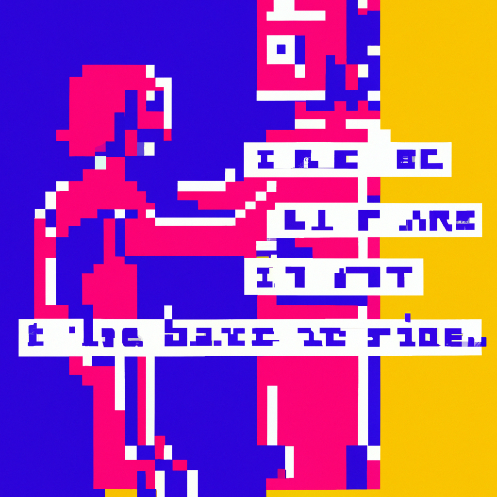

Why we should embrace instead of fear AI
As the world moves closer and closer to an AI-driven future, many people are afraid of the implications of this technology. They fear that it could lead to machines taking control of our lives and that it could lead to a dystopian future.
However, this fear is largely unfounded. AI is an incredibly powerful tool that has immense potential to improve our lives. It can help us solve difficult problems, automate mundane tasks, and even make decisions that we may not have the knowledge or expertise to make.
The key is to use AI responsibly. We should ensure that AI is used for the benefit of humanity and not for its detriment. We should also ensure that the technology is safe and secure, and that it does not lead to any form of discrimination or bias.
The potential of AI is immense, which is why we should embrace it instead of fearing it. We should use it to improve our lives, not to make them worse. AI can be used to automate tedious and time-consuming tasks, to make businesses more efficient, and even to save lives.
Ultimately, AI should be used with caution and in a responsible manner. We should not be afraid of AI, but instead, we should embrace its potential and use it to make our lives better.